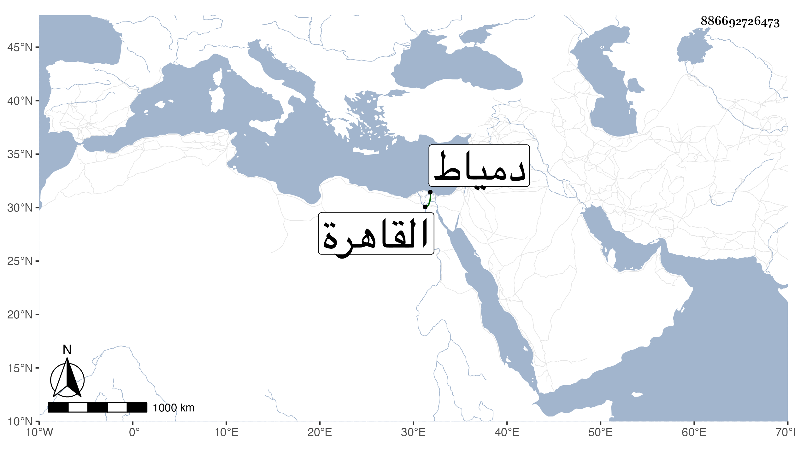

0902Sakhawi.DawLamic.ITO20230111-ara1.EIS1600.886692726473
Biography ID: 886692726473
1155
يوسف بن أحمد بن غازي بن محمد بن أبي بكر بن عبد الله بن تورانشاه ابن أيوب بن محمد بن أبي بكر بن أيوب بن شاذي بن مروان . ذكره شيخنا في معجمه فقال الملك الجليل العالم صلاح الدين بن الناصر بن العادل بن المجاهد بن الكامل بن الموحد ابن المعظم بن الصالح بن الكامل بن العادل بن أيوب الأيوبي الحصني . ولد سنة بضع وسبعين في حجر المملكة ونشأ شجاعا بطلا ثم اشتغل بالعلم فمهر فيه وتفنن في عدة علوم ونظم الشعر فأجاد ورغب عن الملك وزهد في الدنيا وأقبل على الآخرة فرحل عن بلاده طالبا ثغرا يجاهد فيه الكفار فدخل القاهرة سنة سبع عشرة فلازمني طويلا وبحث على مختصري النخبة وعلقها بخطه ومختصر الكرماني في علوم الحديث أيضا وكان معه ثم كتب عني شرح النخبة وكان يستحسنه جدا وحضر في إملائي على شرح البخاري واستفدت منه وسمعت من فوائده وكان شكلا بهيا ونفسا رضية ، كثير العبادة حسن التلاوة شجي الصوت سليم الفطرة ملوكي الأدب بطلا شجاعا قليل النظير ، ولم يزل قاصدا التوجه لدمياط أو غيره من الثغور لنية المرابطة إلى أن استشهد بالطاعون في سنة تسع عشرة بعد أن عدته في مرضه فوجدته في الغمرات فقلت له كيف تجدك فقال طيب ، ولما مات ودفن اتفق أن القراء قرؤوا على جنازته سورة يوسف ولم يعهد ذلك من قراء الجنائز ثم اتفق أنه دلي في قبره عند انتهاء قراءتهم إلى قوله تعالى كذلك لنصرف عنه السوء والفحشاء إنه من عبادنا المخلصين فكان هذا من الاتفاق النادر لكون اسمه يوسف . قلت وهو ممن أنزله القاضي جلال الدين البلقيني بمدرسته وقرأ على القاضي واختص به الجد حينئذ واستأنس كل منهما بالآخر رحمهما الله وهو في عقود المقريزي .
